1

PREPARA IL RISO
Prepara il riso con zafferano e sale. Una volta cotto, lascialo raffreddare fino a quando sarà facile da lavorare con le mani.

LA VERSIONE PIÙ AUDACE
Ogni Arancino Esagerato è il risultato di passione, creatività e materie prime selezionate. Dal pistacchio alla 'nduja, ogni preparazione celebra i sapori più autentici del territorio con un tocco audace e contemporaneo.
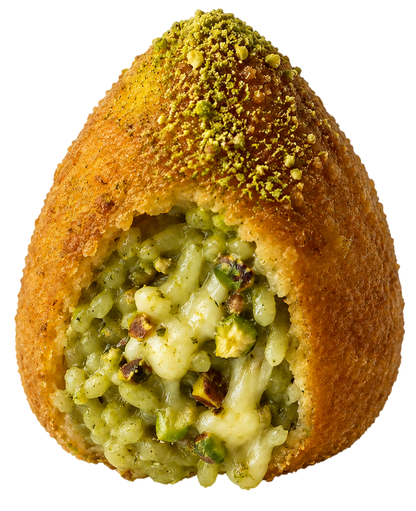
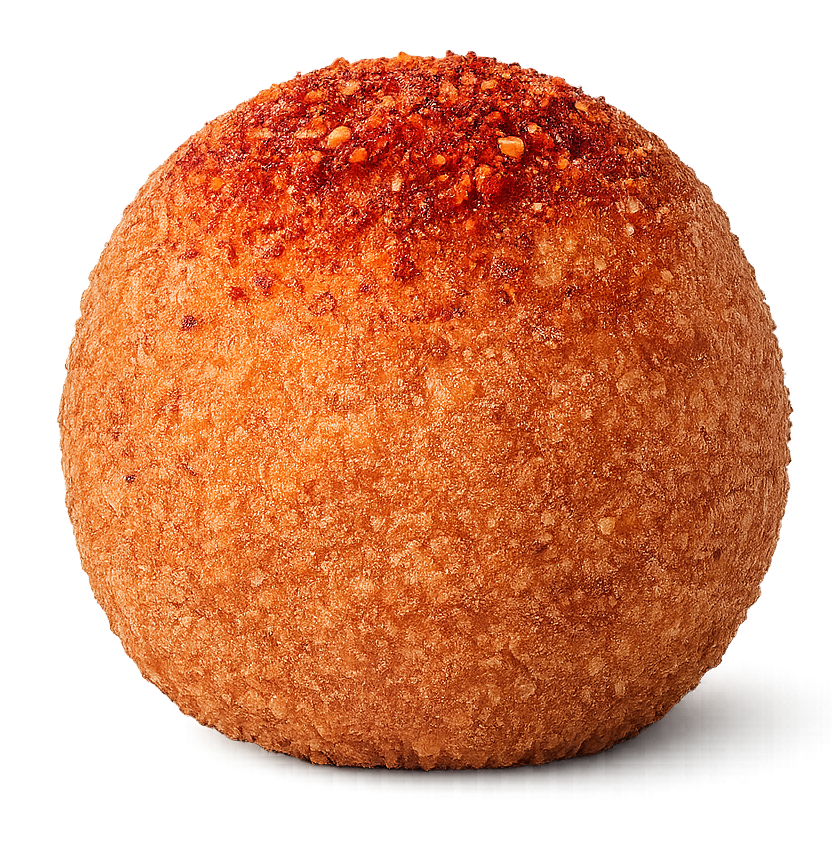
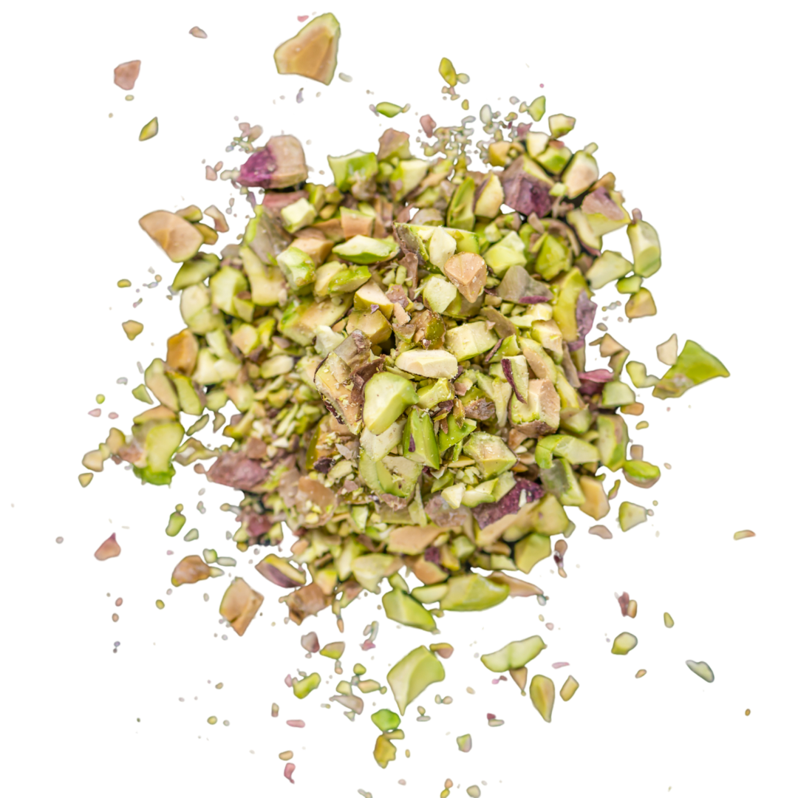
L'Arancino Esagerato nasce per chi ama i sapori forti, le consistenze cremose e gli ingredienti che raccontano il Sud Italia in modo deciso e contemporaneo.
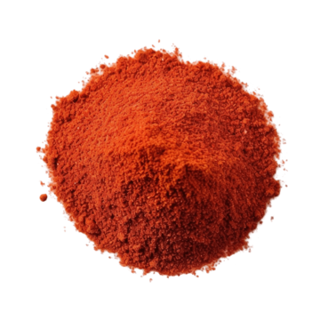
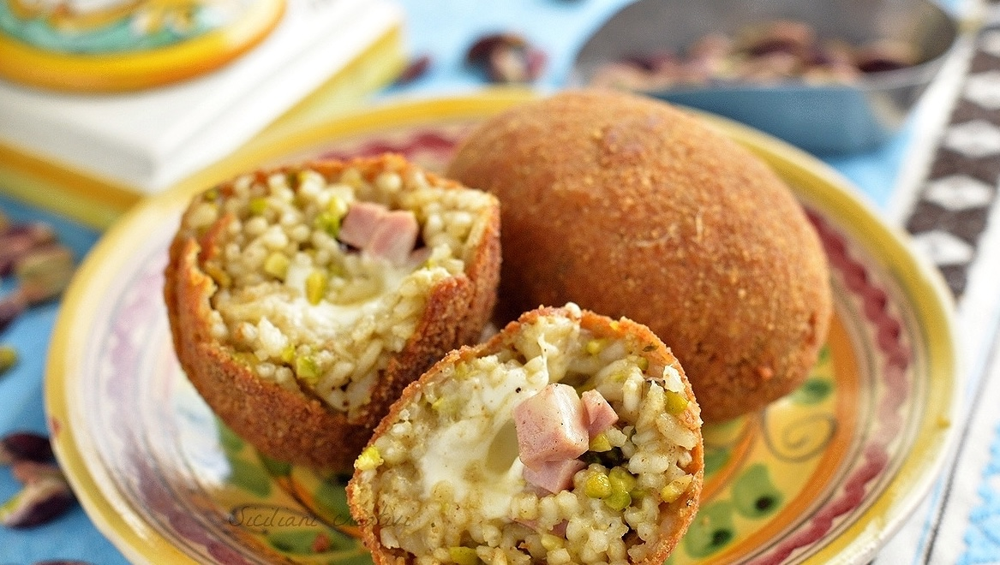
Crema di pistacchio,mozzarella filante, e granella croccante.
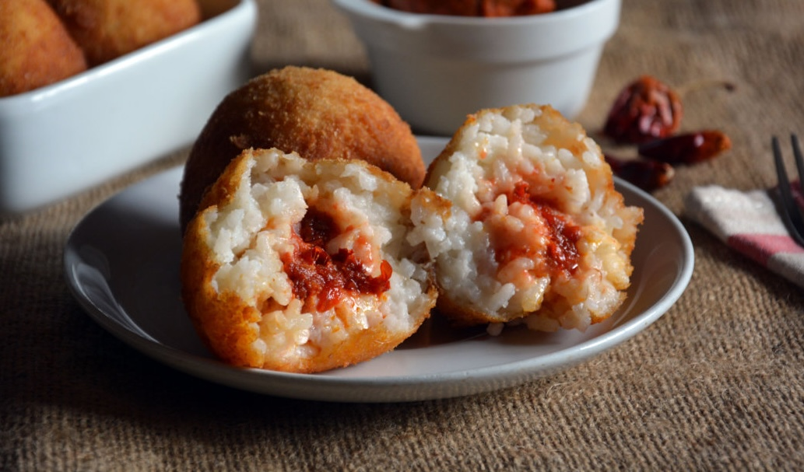
'Nduja calabrese,formaggio filante e gusto deciso
| Pistacchio | 'Nduja | |
|---|---|---|
| Intensità | ★★★★☆ | ★★★★★ |
| Cremosità | ★★★★★ | ★★★☆☆ |
| Piccantezza | ★☆☆☆☆ | ★★★★★ |
Il pistacchio domina il palato con una cremosità avvolgente e una nota croccante finale.
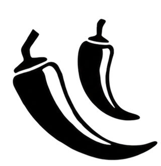
La 'nduja porta colore, carattere e una spinta di sapore impossibile da dimenticare.
PASSO DOPO PASSO
Ogni arancino nasce da gesti semplici e ingredienti genuini. Scopri come prendono forma i nostri arancini tradizionali.
Prepara il riso con zafferano e sale. Una volta cotto, lascialo raffreddare fino a quando sarà facile da lavorare con le mani.
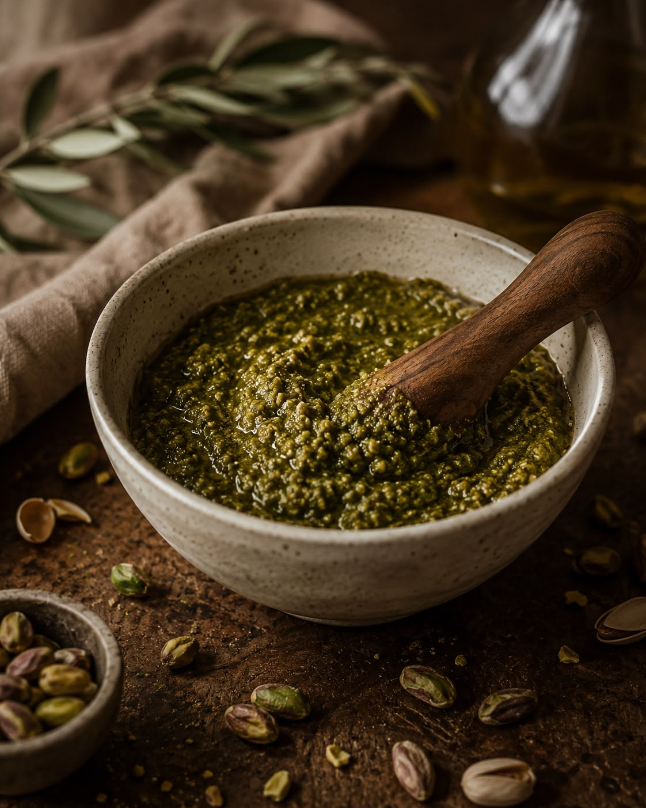
Prepara una cremosa salsa al pistacchio dal gusto delicato e avvolgente, pronta a diventare il cuore dell'arancino gourmet.
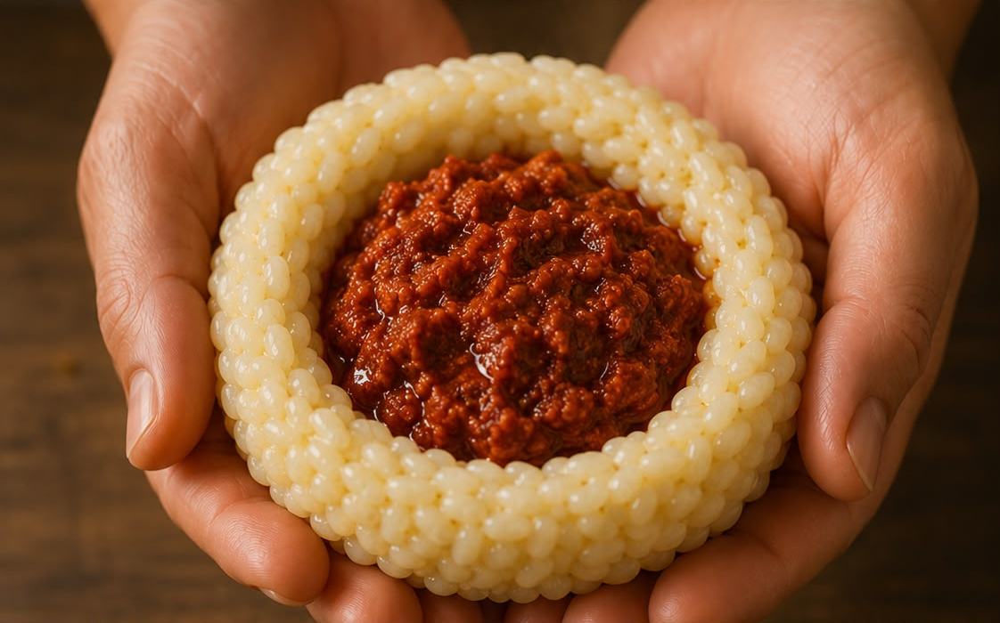
Scalda delicatamente la 'nduja per ottenere una farcitura morbida e intensa dal caratteristico gusto piccante.
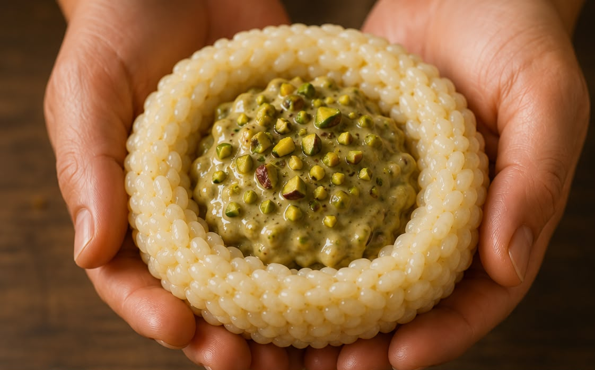
Prendi una porzione di riso, crea delicatamente una cavità al centro e aggiungi il ripieno scelto: pistacchio o 'nduja'.
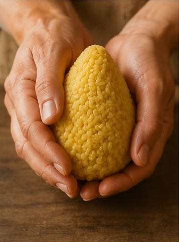
Richiudi il riso attorno al ripieno e modella l'arancino nella sua forma tradizionale.

Passa ogni arancino nella pastella e ricoprilo uniformemente con il pangrattato.

Immergi gli arancini nell'olio caldo fino a ottenere una doratura uniforme e una crosta croccante.
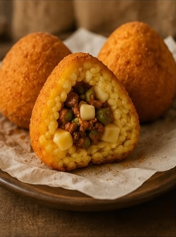
Lascia riposare qualche minuto e servi gli arancini ancora caldi, con il cuore morbido e saporito.